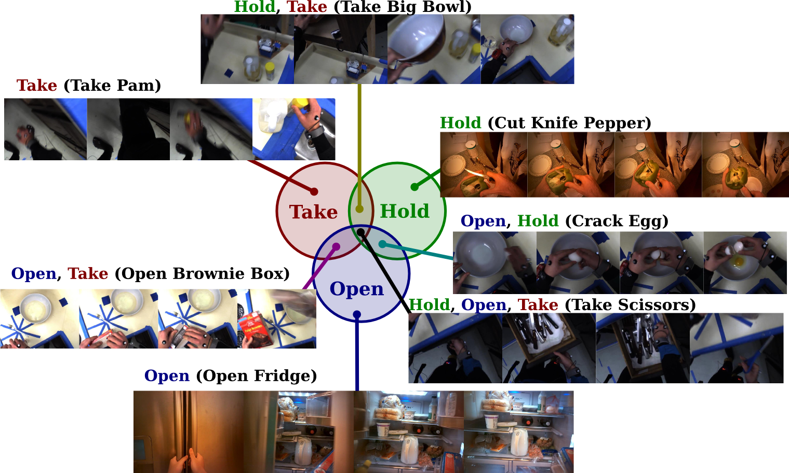

Michael Wray, Davide Moltisanti, Walterio Mayol-Cuevas, Dima Damen

For the task of action recognition semantic ambiguities between verbs can result in overlaps between classes. Because of this standard classification techniques are unable to correctly learn valid verb labels for each video.
Given a video segment containing an object interaction we model the probability of a verb - out of a list of verbs - being chosen by human annotators as a correct label for the video.
We use a two-stream CNN and test a probabilistic classifier on two public datasets, comprising of 1405 video sequences which we label, and outperform conventional single-label classification by 11% and 6% on the two datasets respectively. We also show that by learning probabilities the method is able outperform majority voting and enables discovery of co-occurring labels.